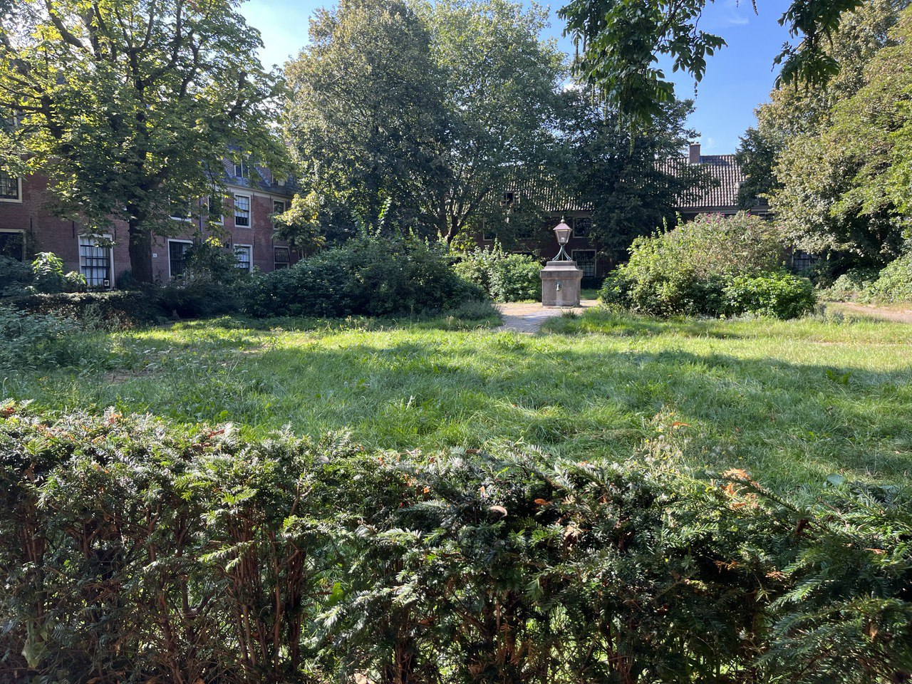
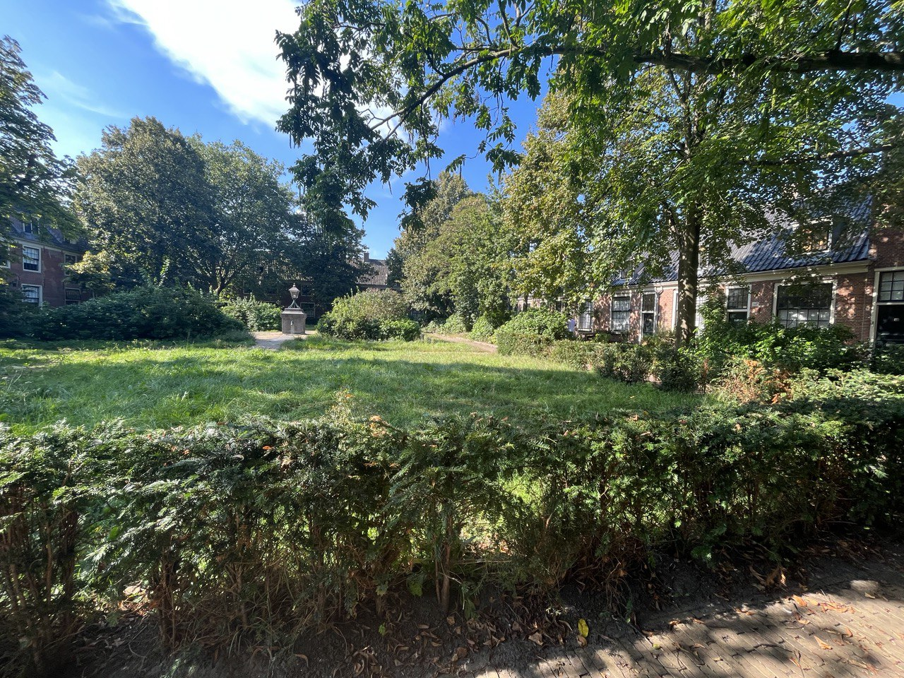
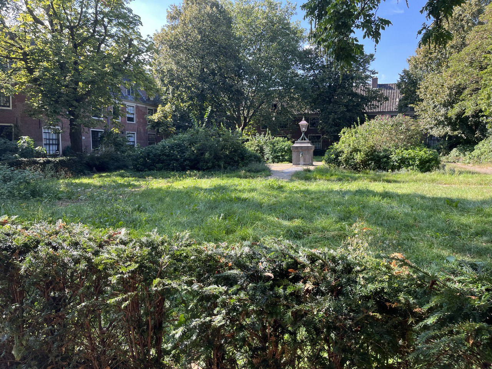
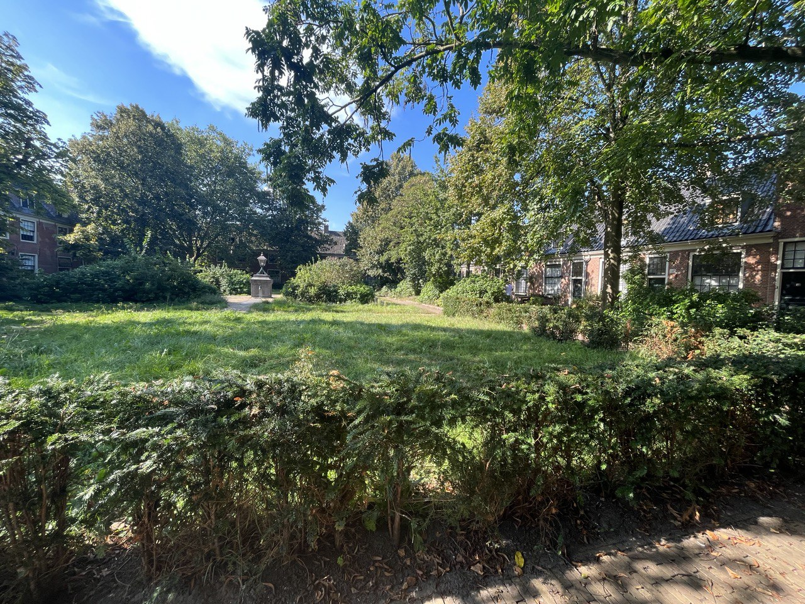

Proveniershuis
What is Proveniershuis?
Proveniershuis is a complex historic building. It is built in 1591 and now it is used for different shops and cafés. The building also has a garden which is very beautiful place to stay and just rest for a while. The garden has rectangular form. It has a lot of plants, some sculptures and hand pump that was used to get water. Not far from Proveniershuis you can also find more places that you probably would like to see like St. Elisabeth Hospital.
How to find Proveniershuis?
If you decided to visit Proveniershuis you will need to go to old city in Haarlem and nearby you will find Proveniershuis. It is not that easy to find the place so you should use google maps to find the place
 


